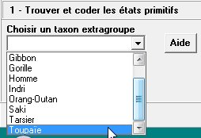
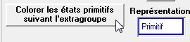
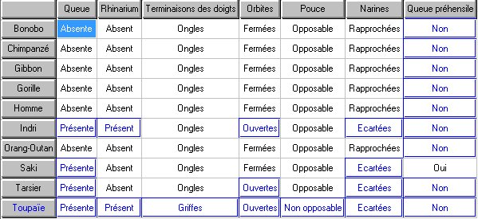
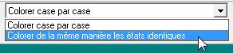
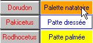
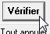
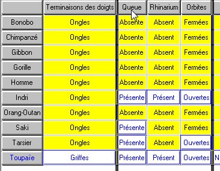
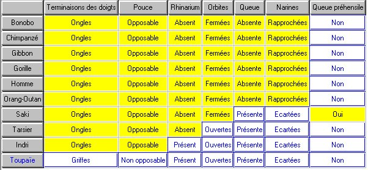

Polariser
Polariser
Polariser
Polariser consiste à distinguer l'état primitif et le ou les états dérivés. Cette partie ne concerne que le travail en classe terminale du lycée ou l'enseignement supérieur.
Ce taxon extragroupe ne fait pas partie du groupe, il ne partage donc aucun état dérivé des caractères homologues 1 avec les membres du groupe étudié. S'il y en a plusieurs de proposés, Le plus simple pour la suite est de n'en choisir qu'un seul.
|  | Dans le menu déroulant, choisir un extragroupe |
|
 Les états primitifs des caractères (dans le cadre de l'étude) ont été colorés avec le style qui a été choisi pour cela (par défaut cadre et texte en bleu et fond blanc). |
Colorer toutes les cases contenant des états identiques à ceux de l'extragroupe |
|  | Résultat. |
1 La définition d'un état dérivé (ou primitif) d'un caractère est relative au groupe étudié. Les états dérivés dont il est question ici sont ceux qui sont propres au groupe étudié. ce groupe peut être un sous-groupe de la collection complète (par exemple, dans la collection Vertébrés, si on limite l'étude aux Amniotes, la Salamandre est un bon extragroupe qui ne possède aucun des états dérivés propres aux Amniotes).
|  | Choisir de colorer de la même manière tous les états identiques (pour un caractère donné). |
|

S'il y a un deuxième état dérivé (donc autre autre que '?'), utiliser une autre couleur.
Opérer de la même manière pour toutes les colonnes |
Cliquer sur une case correspondant à un état dérivé. toutes les cases identiques pour le caractère se colorent de la même manière. |
|  | Faire Vérifier en cliquant sur le bouton correspondant. |
en rangeant les colonnes et les lignes.
|
Déplacer les colonnes avec la souris en les prenant au niveau des titres. Mettre le plus à gauche les caractères qui sont à l'état dérivé chez le plus grand nombre de taxons. Respecter aussi les logiques de groupes : si un ensemble se dessine, continuer avec les sous catégories avant de passer à un autre groupe. |
|
|  | |
|
|
|  |
.
{kind=link}
{kind=link}
{kind=link}